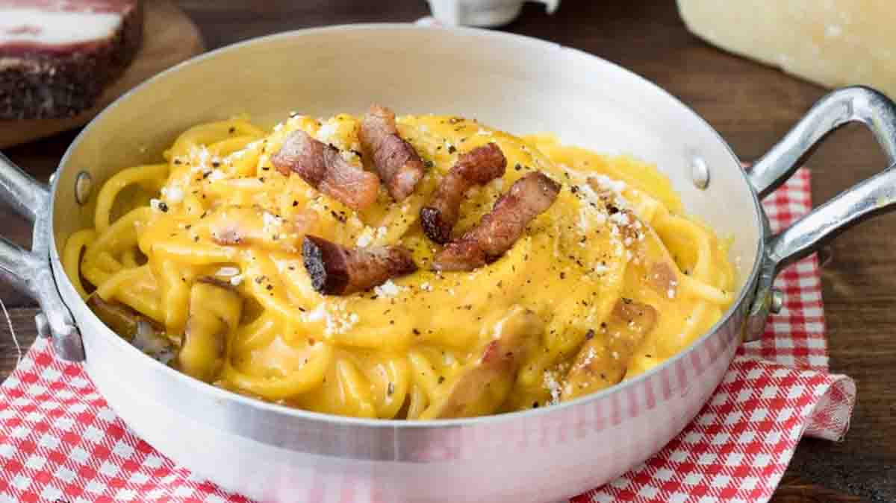

Spaghetti Carbonara

Description
This old authentic carbonara recipe will melt in your mouth with it's creamy and delicious flavour.
Ingredients (for 1 pers)
- 150g of spaghetti
- 2 eggs
- 50g of pecorino cheese
- 5-10g of crushed black pepper
- 50g of guanciale (or bacon if you can't find any)
- A lot of salt
Steps
- Start by boiling a pot 2/3s full with water on medium heat.
- While the water is boiling, grate the pecorino inside a bowl, reserve in the fridge.
- Cut the guanciale into medium sized bits. You can make them thiner if you prefer, then reserve at room temp.
- Crack 1 egg inside a bowl, and crack the other one and only add the yolk inside that same bowl.
- Add in the pecorino you grated earlier with the eggs, stir and add the crushed black pepper.
- By now, the water should already be boiling. Put a lot of salt inside the water, add the pasta and cook them accordingly to the package instructions.
- Meanwhile, put the guanciale in a cold pan, then turn it on medium-high heat.
- Once the pasta finishes cooking, take a ladle and pour a little bit of pasta water inside the pan with the guanciale. It's gonna be sizzling, so reduce the heat a bit.
- Keep a bit of pasta water inside a container, drain the pasta with a strainer and pour them directly on the pan.
- Mix and cook for 30 seconds. Then immediatly cut the heat and add your egg mixture.
- Mix until it gets creamy, if it's too mushy then add some pasta water again to loosen it up.
- Enjoy your food ! Remember, the longer you wait, the colder it gets and the less creamy the sauce will be.